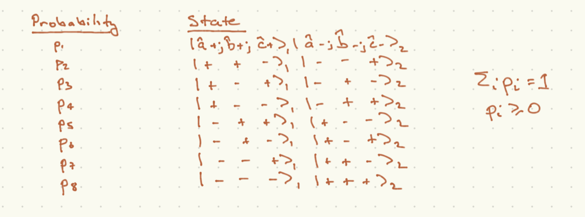

Local Realism vs. Quantum Mechanics#
We close this chapter by working out a rewalization of John Bell’s that we can test quantum mechanics against a while class of models which capture the demand that there be some underlying theory which is completely local and deterministic such taht probabilities truly capture our ignorance of some microscopic degrees of freedom. These are known as ``local hidden variable theories”.
Bell’s ineqaulities#
Our question is, can we reproduce the results of quantum mechanical measurement with these rules? Bell’s insight was that you cannot.
As an example, we can consider the case that each particle is in one of the four following states with equal (\(25\%\)) probability:
As it happens, we can completely reproduce the results of quantum mechanics if we only make measurements along the \(x\) or \(z\) axis for each particle. In particular if both particles are measured along the same axis, the results will be correlated. But there is nothing fundamentally correlated about these states.
As it happens, this example is too simple. Consider instead a set of three axes along which we might make a measurement, as shown here:

We demand that for any case that the measurements of the two spins are both taken along the same axis, the results corralated as they are in the quantum case (230). The probabilities for each of the 8 possible outcomes of a measurement of each particle along any of the axes \(a,b,c\) are captures in the following table:

Now we can put some bounds on these classical probabilities. Positivity or probabilities means that
Now we can relate these sums to various outcomes:
The probabilities on the RHS are joint probabilities, not conditional probabilities. With this in mind, in the first line, cases 3 and 4 are the only two cases with \({\hat a}_1\cdot{\vec S}_1 = \frac{\hbar}{2}, {\hat b}_2\cdot{\vec S}_2\), and similarly for the next two cases. Now (231) combined with (232) leads to Bell’s inequality
where we have taken \({\hat a}_1 \cdot {\vec S}_1 = \frac{\hbar}{2} \to a_1 = +\) and so on.
What does quantum mechanics predict? Let us consider the state (230). Bu convention the person measuring the first spin is called “Alice” and the person measuring the second spin is called “Bob”. Alice will measure the spin along axis \({\hat n}_A\) and Bob will measure the spin along axis \({\hat n}_B\). Let the angle between these axes be \(\psi\) (eg {\hat n}_A \cdot{\hat n}_B = \cos\psi$). Then with some work, you can show that the conditional probability for Bob measuring spin-up given that Alice measures her spin as up is
Since we can choose the axis in (230) and get the same state, we can choose it to be \({\hat n}_A\). Thus, Alice has a \(50\%\) chance of measuring the spin as \({\hat n}_A \cdot{\vec\sigma} = +1\), so the joint probability of ALice and Bob both measuring the spins as up is:
Now let us consider the axes displayed in the picture. They are all coplanar, and the angle between \({\hat a}\) and \({\hat c}\) is \(\theta\); between \({\hat b}\) and \({\hat c}\) is \(\theta\); and between \({\hat a}\) and \({\hat b}\) is \(2\theta\). We further demand that 0 < \theta < \frac{\pi}{2}$: note that this is a strict inequality.
This setup violates the Bell inequalities. Let us assume the e=inequalities are true. Using (234) and inserting them into (233) given the experimental setup shown, the inequalities would mean
where we have used a half angle identity. Using \(\sin^2\theta = 1 - \cos^2\theta\), the above inequality would requitre that \(\cos^2\theta > \cos\theta\). But given our bounds on \(\theta\), \(0 < \cos\theta < 1\), so this inequality cannot be satisfied.
It is clear that each of these probabilities can be measured, in separate experiments in which the axes are fixed. One can then test the predictions of quantum mechanics. They have been borne out in variants of this experiment. However, the test is essentially a probabilistic one. If we were going to be sticklers we could say that the community of quantum physicists have gotten supremely unlucky and the apparent violations are a matter of bad luck or Trisolarians interfering with the hidden variables or something. We will turn now to a definitive test of quantum mechanics vs. locally realistic hidden variables.
The Greenberger-Horne-Zeilinger (GHZ) experiment#
The experiment we have involves three spin-\(\half\) particles observed by three observers Alice, Bob and Charlotte. The full state of the system is the entangled state:
Now the following three observables commute (so that they can be simultaneously diagonalized, and therefore simultaneously measured):
Note to measure each of these requires each of Alice, Bob, and Charlotte agreeing to measure along a specified axis. You can show that \(\Sigma_i ket{\psi} = \ket{\psi}\), that is, \(\ket{\psi}\) is an eigenstate for all of these operators. Finally, the following observable commutes with the first three:
but \(\Sigma_4\ket{\psi} = - \ket{\psi}\). Note that if we successfully prepare the GHZ state
Can this be realized in a locally realistic hidden variable theory? This happens if for every particle \(A,B,C\) we can specify the results of experiments \(\epsilon_{\mu\in (A,B,C), i \in (x,y)} = \pm 1\), with the probabilities for each of the \(2^6\) possibilities defining the probability ensemble.
Without knowing anything about the ensemble, however, we can show that a lcoally realistic hidden variable cannot reproduce the GHZ experiment applied to (235). If they did, then the states must satisfy
However this is incompatible with \(\eps_{A,x}\eps_{B,x}\eps_{C,x} = -1\). Multiply the three equations above together. We can write
Thus a one-shot measurement of \(\Sigma_{1,2,3,4}\) on the state \(\ket{\psi}\) can rule out locally realistic hidden variable theories.